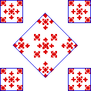

|
 |
| As the right side shows, this fractal can be decomposed into
four pieces with r1 = r2 = r3
= r4 = 1/4,
and one with | |||
| |||
| Thus the Moran equation is | |||
| In the previous exercise we found
the solution to this equation is d =
|
Return to Moran equation exercises.